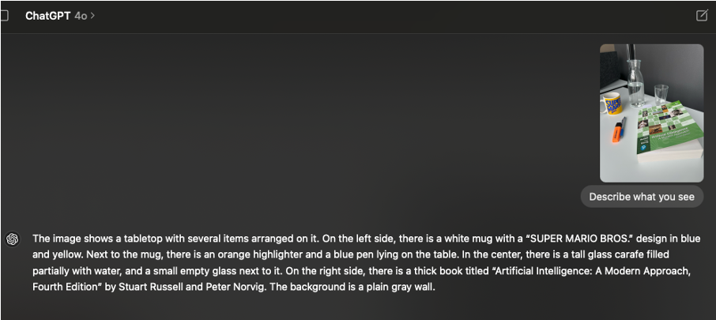

Chapter 4 Artificial Intelligence (AI)
4.1 Introduction
Why do we bother with this topic at all?
For a simple reason: The release of ChatGPT in late 2022 has not only sparked a new wave of interest in AI, but has fundamentally influenced
- how we write text,
- code,
- how we search the internet,
- create images and
- solve problems.
Another reason could be given. As far as I am aware, neural networks (an important part of AI, more on that topic later) are a true extension of our regression models. Hence, the whole regression framework can be subsumed under the umbrella of AI.
One thing should be stated at the beginning. The field and applications are moving so fast that it is impossible to keep up with the latest developments. So, please forgive me if some of the information is outdated or not up to date.
The standard textbook on AI is Russell and Norvig’s Artificial Intelligence: A Modern Approach (3rd edition, 2020), currently in its 4th edition.
Other good (non-technical) books on the topic are:
- Melanie Mitchell’s Artificial Intelligence: A Guide for Thinking Humans
- Gary Marcus’s Rebooting AI: Building Artificial Intelligence We Can Trust
- Stuart Russell’s Human Compatible: Artificial Intelligence and the Problem of Control
- Max Tegmark’s Life 3.0: Being Human in the Age of Artificial Intelligence
The first two authors seem to be less afraid that AI could take over the world, while the latter two authors are more concerned about the implications of AI on society and humanity.
4.1.1 A short history of AI
Artificial Intelligence (AI) refers to the design and development of systems that can perform tasks typically requiring human intelligence—such as reasoning, learning, perception, problem-solving, and natural language understanding.
The ambition to build machines that mimic or surpass human cognitive abilities is not new and can be traced back to myths, philosophical debates, and early mechanical automata.
The formal birth of AI as a field is generally dated to 1956, when John McCarthy, Marvin Minsky, Claude Shannon, and Nathaniel Rochester organized the Dartmouth Summer Research Project on Artificial Intelligence. This conference was the first to coin the term “artificial intelligence” and laid the foundation for decades of exploration into machine cognition.
However, the intellectual roots of AI go much further back. Alan Turing, in his seminal 1950 paper “Computing Machinery and Intelligence”, asked the famous question: “Can machines think?” He proposed the Turing Test as a way to evaluate a machine’s ability to exhibit intelligent behavior indistinguishable from that of a human. Turing’s work established a theoretical framework that deeply influenced how researchers would later define machine intelligence.
In the early decades following Dartmouth, AI research oscillated between periods of optimism and disappointment. The 1950s–1970s were marked by the development of symbolic AI and rule-based systems. Programs like ELIZA (a simple natural language processor) and SHRDLU (which operated in a limited “blocks world”) showcased early attempts at mimicking human-like reasoning. Researchers believed that general AI (AGI) was just around the corner.
This optimism faded in the 1970s and 1980s, leading to what became known as the “AI winter”—a period characterized by reduced funding and slowed progress due to unmet expectations. The limitations of symbolic logic in handling uncertainty and perception-heavy tasks became clear. However, during this time, important subfields like expert systems and machine learning began to evolve quietly.
AI entered a new phase in the late 1990s and early 2000s, buoyed by greater computational power, larger datasets, and improved algorithms. Milestones such as IBM’s Deep Blue defeating chess champion Garry Kasparov in 1997, and later, Watson winning Jeopardy! in 2011, demonstrated tangible progress.
The last decade, however, marked a major paradigm shift, especially with the rise of deep learning, a form of machine learning using artificial neural networks. In 2012, a convolutional neural network (AlexNet) won the ImageNet competition, drastically improving image recognition benchmarks. This breakthrough ignited an AI renaissance that led to the development of powerful models such as GPT (by OpenAI) and BERT (by Google)—transforming fields like natural language processing, computer vision, and robotics.
Today, AI spans everything from autonomous vehicles to medical diagnostics, and the field is increasingly focused not just on capability, but on safety, alignment, interpretability, and ethics. While we are still far from artificial general intelligence (AGI), the rapid progress in AI systems is reshaping industries, science, and society.
In the meantime, AlphaGo, a program developed by Google DeepMind, defeated the world champion Go player Lee Sedol in 2016. As with chess, many people thought that Go would be too complex for a computer to master.
Demis Hassabis, the founder of DeepMind, won the nobel prize in chemistry 2024 for his work on AlphaFold2, which solved the protein folding problem.
4.1.2 ChatGPT
The public release of ChatGPT (Generalized Pretrained Transformer) in November 2022, based on OpenAI’s GPT-3.5, marked a watershed moment in the history of artificial intelligence. While large language models (LLMs) had already impressed researchers, ChatGPT was the first to make them widely accessible through a conversational interface. Suddenly, millions of people could ask questions, get code suggestions, summarize documents, or even write poetry—all through natural dialogue.
By early 2023, ChatGPT had become a global phenomenon, reaching 100 million users within two months, making it the fastest-growing consumer application in history. It changed the public perception of AI from futuristic and experimental to practical and omnipresent.
In March 2023, OpenAI released GPT-4, a much improved model in terms of reasoning, factual accuracy, and multilingual capabilities. GPT-4 also introduced image input and began to bridge the gap toward multimodal AI (not limited to text input).
Here is an example of an image described by GPT-4o (a more advanced version of GPT-4):

(Created with ChatGPT macOS app, 21.5.24)At the time, the perfectly worded image description from GPT felt like magic. One way to achieve this image captioning is explained by Mike Pound here. The transformer architecture (a so-called vision transformer, ViT) is involved in this process, which is a key component of many modern AI systems. We will not go into details here. Interestingly, the transformer architecture was introduced by researchers at Google in 2017 in a paper called Attention is All You Need, which was cited…
library(rvest)
library(stringr)
url <- "https://scholar.google.com/scholar?hl=en&q=attention+is+all+you+need"
page <- read_html(url)
# Extract result blocks
results <- page %>% html_elements(".gs_ri")
first_result <- results[[1]]
# Extract footer text
citation_text <- first_result %>%
html_element(".gs_fl") %>%
html_text()
print("wait for it...")## [1] "wait for it..."## [1] "182980"## [1] "...times."As LLMs matured, the focus shifted (also) to autonomous agents. Systems like AutoGPT, BabyAGI (AGI stands for Artificial General Intelligence), and later OpenAI’s own GPTs (custom bots) experimented with giving models access to tools (e.g., browsers, calculators, APIs), memory, and goals. One failed attempt to sell AI agents as an end-user product was the Rabbit R1.
For people in the field, it was clear the technology was not ready for this type of application yet. I am not sure how is has progressed in the meantime, but a year ago the practical use of these agents was still limited. Google announced “Agent Mode” recently. There have been promises of AI agents performing tasks (like calling a restaurant to make an appointment) autonomously before.
The vision is no longer just chat, but delegating tasks: “book my flights,” “analyze this dataset,” or “write a full report with citations.” This period also saw growing demand for interpretability, trustworthiness, and alignment. Questions about hallucinations, bias, and safety became central—not only for researchers, but for businesses and governments. RLHF (Reinforcement Learning from Human Feedback) became a standard technique to make models more helpful and aligned with human intent.
Meanwhile, open-source efforts accelerated. Meta released LLaMA, and others followed with models like Falcon, Mistral, and Mixtral. Although initially less powerful, these models enabled broader research, customization, and deployment, especially in privacy-sensitive environments.
4.2 Capabilites of LLMs
A model like GPT-4 can perform a wide range of tasks, including:
Text Generation: Writing essays, articles, or creative content. Very simplified, this is done by predicting the next word in a sequence based on the context of the previous words. GPT-4 was trained using Reinforcement Learning from Human Feedback (RLHF). More on reinforment learning later. But the Human Feedback means that humans rated the quality of the generated text.
Image generation: Creating images from text prompts. This has improved during the last 1-2 years. I assume that OpenAI uses very advanced diffusion models for this task, the basic principles are rather graspable though (1, 2).
Example picture generated by GPT-4o:
Question Answering: Providing answers to factual questions or summarizing information. Until this day, LLMs sometimes hallucinate, i.e., they make up facts or provide incorrect information with a high degree of confidence. They are trained on a large corpus of text to produce reasonable sounding answers.
Translation: Translating text between multiple languages. This works rather excellent and brings back memories from my English teacher who told me that language will never be mastered by a computer.
Code Generation: Writing and debugging code in various programming languages.
Image Understanding: Analyzing and describing images (in multimodal versions).
Conversational Agents: Engaging in natural language conversations, simulating human-like dialogue.
Sébastien Bubeck published a paper in 2023 titled
“Sparks of Artificial General Intelligence:
Early Experiments with GPT-4”,
which explores the capabilities of GPT-4 in depth.
As in other technical reports of commercial models,
the so-called model weight (more on that later) are not disclosed.